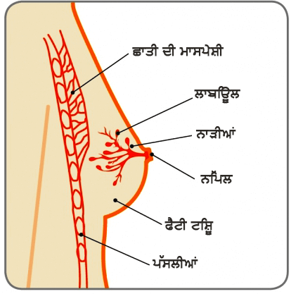

ਨਿੱਪਲ

ਛਾਤੀ ਦੀ ਸਿਹਤ ਬਾਰੇ ਆਰੰਭਿਕ ਮੁੰਦੇ
ਛਾਤੀ ਦੀਆਂ ਰਸੌਲੀਆਂ
ਪ੍ਰੀਤੀ (ਬਦਲਵਾਂ ਨਾਮ), ਰਾਤ ਵੇਲੇ ਇੱਕ 40 ਸਾਲ ਦੀ ਉਮਰ ਵਾਲੀ ਦੀ ਉਮਰ ਵਾਲੀ ਔਰਤ ਨੇ ਆਪਣੀ ਸੱਜੀ ਛਾਤੀ ਵਿੱਚ ਇੱਕ ਗਿਲ੍ਹਟੀ ਨੂੰ ਮਹਿਸੂਸ ਕੀਤਾ. .
ਛਾਤੀ

ਨਿੱਪਲ
ਛਾਤੀ ਦੀ ਰਸੌਲੀ ਕੀ ਹੁੰਦੀ ਹੈ
ਛਾਤੀਆਂ ਨਲੀਆ (ਉਹ ਟਿਉਬਾਂ ਜੋ ਨਿੱਪਲ ਤੱਕ ਦੁੱਧ ਲਿਜਾਉਂਦੀਆਂ ਹਨ) ਅਤੇ ਲਾਬਿਉਲ (ਦੁੱਧ-ਪੈਦਾ ਕਰਨ ਵਾਲੀਆਂ ਗੱਥੀਆਂ) ਤੋਂ ਬਣੀਆਂ ਹੁੰਦੀਆਂ ਹਨ, ਜਿਹੜੀਆਂ ਚਰਬੀਨੁਮਾ ਟਿਸ਼ੂ ਅਤੇ ਸਮਰਥਕ ਟਿਸ਼ੂ ਨਾਲ ਘਿਰੀਆਂ ਹੁੰਦੀਆਂ ਹਨ। ਕਈ ਵਾਰ ਛਾਤੀ ਦੇ ਟਿਸ਼ੂ ਵਿੱਚ ਤਰਲ ਨਾਲ ਭਰੀਆਂ ਥੈਲੀਆਂ ਵਿਕਸਿਤ ਹੁੰਦੀਆਂ ਹਨ। ਇਹ ਛਾਤੀ ਦੀਆਂ ਰਸੌਲੀਆਂ ਹੁੰਦੀਆਂ ਹਨ। ਇਹ ਛਾਤੀ ਵਿੱਛ ਪਾਏ ਜਾਣ ਵਾਲੀ ਇੱਕ ਸਭ ਤੋਂ ਆਮ ਬਿਮਾਰੀ (ਕੈਂਸਰ ਰਹਿਤ ਗਿਲ੍ਹਟੀਆਂ) ਹੈ
ਇਹ ਕਿਵੇਂ ਵਾਪਰਦਾ ਹੈ ਅਤੇ ਇਹ ਕਿਸ ਉਮਰ ਵਿੱਚ ਆਮ ਹੁੰਦੀ ਹੈ
ਇਹ ਵਿਚਾਰ ਹੈ ਕਿ ਉਹ ਛਾਤੀ ਦੀ ਉਮਰ ਅਤੇ ਬਦਲਵਾਂ ਕਾਰਣ ਇਹ ਕੁਦਰਤੀ ਤੌਰ ਤੇ ਵਾਪਰਦੇ ਹਨ। ਭਾਵੇਂ ਕਿ ਵਿਕਤੀ ਅੰਦਰ ਕਿਸੇ ਵੀ ਉਮਰ ਵਿੱਚ ਛਾਤੀ ਦੀਆਂ ਰਸੌਲੀਆਂ ਹੋ ਸਕਦੀਆਂ ਹਨ, ਉਹ ਜਿਆਦਾਤਰ 35 ਸਾਲ ਤੋਂ ਵੱਧ ਉਮਰ ਦੀਆਂ ਔਰਤ ਵਿੱਚ ਹੁੰਦੀਆਂ ਹਨ ਜਿਹੜੀਆਂ ਅਜੇ ਤੱਕ ਰਜੋਨਵਿਰਤੀ ਤੇ ਨਹੀਂ ਪਹੁੰਚਦੀਆਂ ਹੁੰਦੀਆਂ ਹਨ। ਇਹ ਆਮ ਤੌਰ ਤੇ ਉਦੋਂ ਵਾਪਰਦਾ ਹੈ ਜਦੋਂ ਔਰਤਾਂ ਰਜੋਨਵਿਰਤੀ ਤੇ ਪਹੁੰਚਦੀਆਂ ਹਨ ਜਾਂ ਆਮ ਤੌਰ ਤੇ ਬੰਦ ਹੁੰਦਾ ਹੈ ਜਾਂ ਇਸ਼ ਤੋਂ ਆਮ ਨਹੀਂ ਰਹਿੰਦਾ ਹੈ। ਹਾਲਾਂਕਿ, ਉਹ ਔਰਤਾਂ ਜੋ ਰਜੋਨਵਿਰਤੀ ਤੋਂ ਬਾਅਦ ਹਾਰਮੋਨ ਰੀਪਲੇਸਮੈਂਟ ਥੈਰੇਪੀ (ਐਚਆਰਟੀ) ਲੈਂਦੀਆਂ ਹਨ ਉਨ੍ਹਾਂ ਵਿੱਚ ਵੀ ਰਸੋਲੀਆਂ ਹੋ ਸਕਦੀਆਂ ਹਨ।
ਰਸੌਲੀਆਂ ਨਰਮ ਮਹਿਸੂਸ ਹੋ ਸਕਦੀਆਂ ਹਨ ਜੇਕਰ ਉਹ ਚਮੜੀ ਦੀ ਸਤਹਿ ਦੇ ਨੇੜੇ ਹੁੰਦੀਆਂ ਹਨ, ਜਾਂ ਇੱਕ ਸਖਤ ਗਿਲ੍ਹਟੀ ਵਰਗੀਆਂ ਜੇਕਰ ਉਹ ਛਾਤੀ ਦੇ ਟਿਸ਼ੂ ਵਿੱਚ ਵਧੇਰੇ ਗਾਹਿਰੀਆਂ ਹੁੰਦੀਆਂ ਹਨ। ਉਹ ਛਾਤੀ ਵਿੱਚ ਕਿਤੇ ਵੀ ਪੈਦਾ ਹੋ ਸਕਦੀਆਂ ਹਨ, ਪਰ ਜਿਆਦਾਤਰ ਉੱਪਰਲੇ ਅੱਧ ਵਿੱਚ ਪਾਈਆਂ ਜਾਂਦੀਆਂ ਹਨ। ਕੁਝ ਕੁ ਔਰਤਾਂ ਵਿੱਚ ਅਣਸੁਖਾਵੀਆਂ ਅਤੇ ਦਰਦਨਾਲ ਵੀ ਹੋ ਸਕਦੀਆਂ ਹਨ, ਅਤੇ ਪੀਰੀਅਡ ਤੋਂ ਪਹਿਲਾਂ ਇਹ ਗੰਢਾਂ ਵੱਡੀਆਂ, ਅਤੇ ਸਪਰਸ਼ ਕਰਨ ਤੇ ਪੀੜਾਦਾਇਕ ਅਤੇ ਕੋਮਲ ਮਹਿਸੂਸ ਹੋ ਸਕਦੀਆਂ ਹਨ।
ਇੱਕ ਜਾਂ ਵੱਧ ਗੰਢਾਂ ਦਾ ਵਿਕਸਿਤ ਹੋਣਾ ਆਮ ਗੱਲ ਹੈ – ਇੱਕ ਛਾਤੀ ਵਿੱਚ ਜਾਂ ਦੋਹਾਂ ਛਾਤੀਆਂ ਵਿੱਚ – ਅਤੇ ਇਸ ਬਾਰੇ ਚਿੰਤਾ ਕਰਨ ਦੀ ਗੱਲ ਨਹੀਂ ਹੈ। ਅਜਿਹੀਆਂ ਔਰਤਾਂ ਵੀ ਹਨ ਜਿਨ੍ਹਾਂ ਨੂੰ ਆਪਣੇ ਅੰਦਰ ਰਸੌਲੀਆਂ ਹੋਣ ਬਾਰੇ ਪਤਾ ਨਹੀਂ ਹੁੰਦਾ ਪਰ ਇਹ ਹੁੰਦੀਆਂ ਹਨ।
ਉਨ੍ਹਾਂ ਨੂੰ ਕਿਵੇਂ ਲੱਭਿਆ ਜਾਂਦਾ ਹੈ
ਆਮ ਤੌਰ ਤੇ, ਇੱਕ ਔਰਤ ਆਪਣੀ ਛਾਤੀ ਵਿੱਚ ਇੱਕ ਰਾਤ ਅੰਦਰ ਹੀ ਰਸੌਲੀਆਂ ਨੂੰ ਮਹਿਸੂਸ ਕਰਦੀ ਹੈ। ਰਸੌਲੀਆਂ ਛਾਤੀ ਅੰਦਰ ਇੱਕ ਗੰਢ ਵਾਂਗ ਮਹਿਸੂਸ ਹੁੰਦੀਆਂ ਹਨ, ਜਾਂ ਕਈ ਵਾਰ ਅਚਾਨਕ ਲੱਭ ਜਾਂਦੀਆਂ ਹਨ ਜਦੋਂ ਛਾਤੀ ਦੀ ਜਾਂਚ ਜਾਂ ਛਾਤੀ ਦੀ ਰੁਟੀਨ ਸਕਰੀਨਿੰਗ ਕਰਵਾਈ ਜਾਂਦੀ ਹੈ।
ਇੱਕ ਮਾਹਿਰ ਨਾਲ ਸਲਾਹ ਮਸ਼ਵਰਾ ਕਰਨਾ ਜਰੂਰੀ ਹੁੰਦਾ ਹੈ ਅਤੇ ਤਿੰਨ ਵੱਖ ਵੱਖ ਟੈਸਟ ਕਰਵਾਉਣੇ ਮਹੱਤਵਪੂਰਣ ਹੁੰਦੇ ਹਨ, ਜਿਨ੍ਹਾਂ ਨੂੰ ਆਮ ਤੌਰ ਤੇ ਤੀਹਰੇ ਮੁਲਾਂਕਣ ਵਜੋਂ ਸੰਦ੍ਰਭਿਤ ਕੀਤਾ ਜਾਂਦਾ ਹੈ, ਤਾਂ ਕਿ ਇੱਕ ਸੁਨੁਸ਼ਚਿਤ ਜਾਂਚ ਕੀਤੀ ਜਾ ਸਕੇ।
ਤੀਹਰਾ ਮੁਲਾਂਕਣ – ਕਲਿਨੀਕਲ ਛਾਤੀ ਦੀ ਜਾਂਚ, ਇੱਰ ਮੈਮੋਗ੍ਰਾਮ (ਛਾਤੀ ਦਾ ਐਕਸ-ਰੇ) ਅਤੇ ਅਲਟਰਾਸਾਉਂਡ ਸਕੈਨ (ਜਿਹੜੀ ਉੱਚ-ਫਰੀਕਵੈਂਸੀ ਵਾਲਿਆਂ ਸਾਉਂਡ ਵੇਵਜ਼ ਦੀ ਵਰਤੋਂ ਕਰਕੇ ਛਾਤੀ ਦੀ ਇੱਕ ਤਸਵੀਰ ਤਿਆਰ ਕਰਦੀ ਹੈ) ਅਤੇ ਜੇਕਰ ਲੋੜ ਹੋਵੇ ਰਸੌਲੀ ਦੇ ਤਰਲ ਦੀ ਇੱਕ ਅਲਟਰਾਸਾਉਂਡ ਨਿਰਦੇਸ਼ਿਤ ਐਸਪੀਰੇਸ਼ਨ। ਸਰਲ ਨੂੰ ਜਾਂਚ ਲਈ ਲੈਬਾਰਟਰੀ ਵਿੱਚ ਵੀ ਭੇਜਿਆ ਜਾ ਸਕਦਾ ਹੈ ਜੇਕਰ ਇਹ ਲਹੂ ਨਾਲ ਭਿੱਜਿਆ ਹੋਵੇ, ਕਿਉਂਕਿ ਚੁਸੇ ਵਿੱਚ ਲਹੂ ਵਰਗਾ ਤਰਲ ਇੱਖ ਬਹੁਤ ਹੀ ਛੋਟੇ ਜੋਖਮ ਨੂੰ ਦਰਸ਼ੀਉਂਦਾ ਹੈ ਕਿ ਇਹ ਛਾਤੀ ਦੇ ਕੈਂਸਰ ਦਾ ਇੱਖ ਲੱਛਣ ਹੋ ਸਕਦਾ ਹੈ।


ਕੀ ਰਸੌਲੀ ਨੂੰ ਹਮੇਸ਼ਾ ਇੱਕ ਛੋਟੀ ਬਿਮਾਰੀ (ਗੈਰ ਘਾਤਰ) ਹੋਣਾ ਸਮਝਿਆ ਜਾਂਦਾ ਹੈ<
ਬਹੁਤ ਸਾਰੀਆਂ ਰਸੌਲੀਆਂ ਛੋਟੀਆਂ ਬਿਮਾਰੀਆਂ (ਕੈਂਸਰ ਰਹਿਤ) ਹੁੰਦੀਆਂ ਹਨ ਅਤੇ ਛਾਤੀ ਦਾ ਕੈਂਸਰ ਵਿਕਸਿਤ ਹੋਣ ਦਾ ਕੋਈ ਵੀ ਵਾਧੂ ਜੋਖਮ ਨਹੀਂ ਹੁੰਦਾ। ਹਾਲਾਂਕਿ, ਬਹੁਤ ਘੱਟ, ਕੁਝ ਕੁ ਰਸੌਲਿਆਂ ਕੈਂਸਰ ਨੂੰ ਪਨਾਹ ਦੇ ਸਕਦੀਆਂ ਹਨ (ਇੰਟਰੈਸਾਈਟਿਕ ਕੈਂਸਰ)। ਇਹ ਯਕੀਨੀ ਬਣਾਉਣ ਲਈ ਕਿ ਇਸ ਵਿੱਚ ਖੌਫ਼ਨਾਕ ਕੁਝ ਵੀ ਨਹੀਂ ਹੈ ਰਸੌਲੀ ਤੋਂ ਲਹੂ ਦੇ ਨਿਕਲੇ ਚੁਸੇ ਦਾ ਧਿਆਨ ਪੂਰਵਕ ਮੁਲਾਂਕਣ ਕਰਨਾ ਚਾਹੀਦਾ ਹੈ।
ਛਾਤੀ ਦੀਆਂ ਰਸੌਲੀਆਂ ਨੂੰ ਕਿਵੇਂ ਪ੍ਰਬੰਧਿਤ ਕੀਤਾ ਜਾਂਦਾ ਹੈ
ਜੇਕਰ ਤੀਹਰੇ ਮੁਲਾਂਕਣ ਨੇ ਇੱਕ ਸਧਾਰਣ ਰਸੌਲੀ ਦੀ ਮੌਜੂਦਗੀ ਨੂੰ ਸੁਨਿਸ਼ਚਿਤ ਕੀਤਾ ਹੋਵੇ, ਤਾਂ ਔਰਤ ਨੂੰ ਯਕੀਨ ਦਿਵਾਉਣਾ ਚਾਹੀਦੀ ਹੈ ਕਿ ਇਹ ਗਿਲ੍ਹਟੀ ਇੱਕ ਕੈਂਸਰ ਨਹੀਂ ਹੈ ਅਤੇ ਇਹ ਕਿ ਇਹ ਕੈਂਸਰ ਦੀ ਅਗਵਾਈ ਨਹੀਂ ਕਰੇਗਾ। ਬਹੁਤ ਸਾਰੀਆਂ ਰਸੌਲੀਆਂ ਆਪਣੇ ਆਪ ਖਤਮ ਹੋ ਜਾਂਦੀਆਂ ਹਨ ਅਤੇ ਇਸ ਬਾਰੇ ਚਿੰਤਾ ਵਾਲੀ ਕੋਈ ਗੱਲ ਨਹੀਂ ਹੁੰਦੀ। ਛਾਤੀ ਦੀਆਂ ਬਹੁਤ ਸਾਰੀਆਂ ਰਸੌਲਿਆਂ ਨੂੰ ਹਵਾਰਹਿਤ ਕਰਨ ਦੀ ਲੋੜ ਨਹੀਂ ਹੁੰਦੀ। ਰਸੌਲੀਆਂ ਨੂੰ ਨਿਕਾਲਣ ਲਈ ਸਰਜਰੀ ਦੀ ਲੋੜ ਨਹੀਂ ਹੁੰਦੀ।
ਜੇਕਰ ਰਸੌਲੀ ਵੱਡੀ ਹੋਵੇ ਅਤੇ ਇਸ ਕਾਰਣ ਅਸੁਵਿਧਾ ਹੁੰਦ ਹੋਵੇ, ਤਾਂ ਅਸਟ੍ਰਾਸਾਉਂਡ ਗਾਈਡੈਂਸ ਨਾਲ ਜਾਂ ਇਸ ਤੋਂ ਬਿਨਾਂ ਇੱਕ ਬਾਰੀਕ ਸੂਈ ਅਤੇ ਸਰਿੰਜ ਨਾਲ ਤਰਲ ਨੂੰ ਨਿਕਾਲਿਆ ਜਾ ਸਕਦਾ ਹੈ।.
ਤਰਲ ਦੇ ਇੱਕ ਵਾਰ ਨਿਕਾਲਣ ਦੇ ਨਾਲ, ਰਸੌਲੀ ਆਮ ਤੌਰ ਤੇ ਅਲੌਪ ਹੋ ਜਾਂਦੀ ਹੈ। ਰਸੌਲੀ ਤੋਂ ਨਿਕਾਲਿਆ ਜਾਣ ਵਾਲਾ ਤਰਲ ਦੇਖਣ ਵਿੱਚ ਵੱਖ ਵੱਖ ਹੋ ਸਕਦਾ ਹੈ, ਸਾਫ ਤੋਂ ਬਹੁਤ ਗਹਿਰਾ।.
ਜੇਕਰ ਛਾਤੀ ਦੀ ਅਲਟ੍ਰਾਸਾਉਂਡ ਇੱਕ ਇੰਟਰਾਸਿਸਟਿਕ ਵਾਧੇ ਨੂੰ ਦਰਸ਼ਾਉਂਦੀ ਹੋਵੇ, ਤਾਂ ਰਸੌਲੀ ਦੇ ਤਰਲ ਨੂੰ ਹਵਾਰਹਿਤ ਕੀਤਾ ਜਾਣਾ ਚਾਹੀਦਾ ਹੈ ਅਤੇ ਇੰਟਰਾਸਿਸਟਿਕ ਕੈਂਸਰ ਦੀ ਮੌਜੂਦਗੀ ਨੂੰ ਖਾਰਿਜ ਕਰਨ ਲਈ ਇੰਟਰਾਸਿਸਟਿਕ ਵਾਧੇ ਦੀ ਇੱਕ ਕੋਰ ਨੀਡਲ ਬਾਇਯੋਪਸੀ ਕਰਨ ਤੋਂ ਇਲਾਵਾ ਕੋਸ਼ਕਾਵਾਂ ਦੇ ਅਧਿਐਨ ਲਈ ਭੇਜਿਆ ਜਾਣਾ ਚਾਹੀਦਾ ਹੈ।
ਹਾਲਾਂਕਿ, ਇਹ ਯਾਦ ਰੱਖਿਆ ਜਾਣਾ ਚਾਹੀਦਾ ਹੈ ਕਿ ਇੰਟਰਾਸਿਸਟਿਕ ਕੈਂਸਰ ਬਹੁਤ ਘੱਟ ਹੁੰਦੇ ਹਨ ਅਥੇ ਬਹੁਤ ਸਾਰੀਆਂ ਔਰਤਾਂ ਨੂੰ ਗੱਠਾੰ ਬਾਰੇ ਯਕੀਨ ਦਿਵਾਉਣ ਦੀ ਲੋੜ ਹੁੰਦੀ ਹੈ।.
ਕੀ ਹਵਾਰਹਿਤ ਕਰਨ ਤੋਂ ਬਾਅਦ ਵੀ ਰਸੌਲੀ ਹੋ ਸਕਦੀ ਹੈ
ਰਸੌਲੀਆਂ ਦੁਬਾਰਾ ਹੋ ਸਕਦੀਆਂ ਹਨ, ਜਾਂ ਵਿਅਕਤੀ ਅੰਦਰ ਨਵੀਆਂ ਰਸੌਲੀਆਂ ਹੋ ਸਕਦੀਆਂ ਹਨ। ਇਹ ਕਲਪਨਾ ਕਰਨਾ ਮਹੱਤਵਪੂਰਣ ਨਹੀਂ ਹੁੰਦਾ ਕਿ ਇਹ ਇੱਕ ਵਾਰ ਵਾਰ ਹੋਣ ਵਾਲੀ ਗਿਲ੍ਹਟੀ ਹੈ। ਮੁਲਾਂਕਣ ਕਰਨ ਅਤੇ ਪੁਸ਼ਟੀ ਕਰਨ ਲਈ ਇੱਕ ਮਾਹਿਰ ਨਾਲ ਮਸ਼ਵਰਾ ਕਰਨਾ ਲਾਜ਼ਮੀ ਹੁੰਦਾ ਹੈ। ਰਸੌਲੀਆਂ ਦਾ ਇਲਾਜ਼ ਹਰ ਵਾਰ ਇੱਕੋ ਜਿਹਾ ਹੁੰਦਾ ਹੈ।
ਕੀ ਰਸੌਲੀਆਂ ਦੀ ਜਾਂਚ ਕਰਨ ਤੋਂ ਬਾਅਦ ਇੱਕ ਫਾਲੋ-ਅੱਪ ਕਰਨ ਦੀ ਲੋੜ ਹੁੰਦੀ ਹੈ
ਜੇਕਰ ਰਸੌਲੀ ਨੂੰ ਖਾਲੀ ਕੀਤਾ ਜਾਂਦਾ ਹੈ, ਤਾਂ ਮਾਹਿਰ ਲਈ ਔਰਤ ਦੀ ਕੁਝ ਕੁ ਹਫਤਿਆਂ ਵਿੱਚ ਇਹ ਪਤਾ ਲਗਾਉਣ ਲਈ ਜਾਂਚ ਕਰਨਾ ਮਹੱਤਵਪੂਰਣ ਹੁੰਦਾ ਹੈ ਕਿ ਇਹ ਦੁਬਾਰਾ ਨਾ ਭਰੀ ਹੋਵੇ। ਫਾਲੋ-ਅੱਪ ਦੌਰੇ ਦੇ ਦੌਰਾਨ ਛਾਤੀ ਦੀ ਇੱਕ ਅਲਟ੍ਰਿਉਂਡ ਸਕੈਨ ਕੀਤੀ ਜਾਣੀ ਚਾਹੀਦੀ ਹੈ।